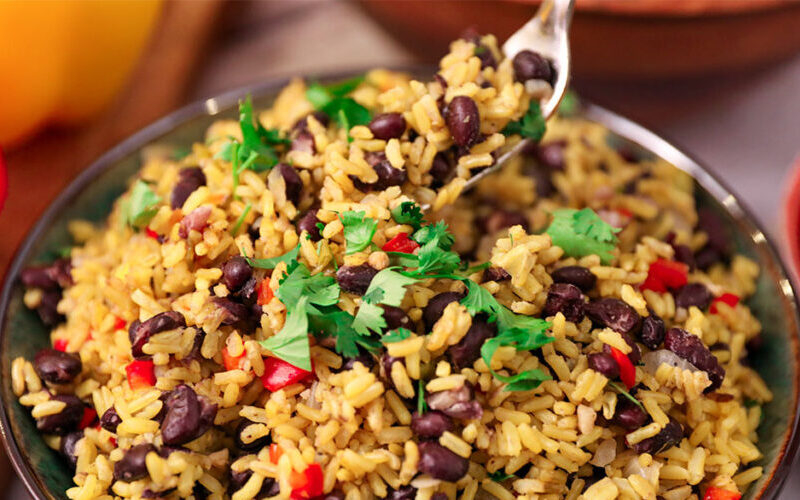

Ingredients
- 3 tablespoons canola oil
- 1/4 onion, chopped
- 1/2 green or red bell pepper, diced
- 3 cups cooked red or black beans
- 3 cups cooked white rice
- Salt to taste
- 2 tablespoons fresh cilantro (culantro), chopped
Instructions
- Heat the oil in a large skillet and sauté the onion and bell pepper until soft.
- Add the well-drained beans and fry for three to five minutes. Add a little bean cooking broth if you see they are getting too dry.
- Incorporate the rice and continue frying for about three more minutes, adding a little more bean broth so the gallo pinto doesn't get too dry. Finally, garnish with chopped cilantro.